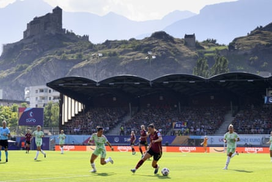

Italy kicked off their Euro 2025 challenge with a controlled victory in their Group B opener in Sion. Arianna Caruso’s spectacular first-half goal proved the difference in a close encounter against a well-organised Belgium.
With the game evenly matched, it was one that required just a moment of quality. Caruso is Italy’s puppet-master, pulling the strings with ease from the heart of the midfield. Her goal was an example of what Italy can do when they are at their best.
With space opening up, Caruso broke forward and collected Lucia Di Guglielmo’s pinpoint pass into her feet on the edge of the penalty area. The finish was exquisite, a curling shot past the helpless Lisa Lichtfus.
The beauty of the goal was matched only by the majesty of the Swiss Alps that surrounded the scenic Stade de Tourbillon. This promised to be an intriguing encounter with both knowing how important a victory would be.
Italy have been on a journey under Andrea Soncin since he took over the reins in September 2023. Le Azzurre have undergone somewhat of a regeneration since. A technical and creative side, they beat Germany in December and recently finished second in their Nations League campaign.
Soncin opted to change shape, moving to a back three of Martina Lenzini, Cecilia Salvai, Elena Linari in an attempt to control Belgium’s counterattacking potency. They were dealt a blow earlier in the week when forward Chiara Beccari was ruled out of the tournament with a thigh injury but they are certainly not short of attacking talent. Leading the line was their captain and centurion, Cristiana Girelli. The 35-year-old striker continues to prove that age is but a number, finishing as top scorer in the Serie A Femminile this season and now appearing in her fourth European Championship.
Coming up against Belgium, however, has traditionally proven to be a hurdle for the Italians. Elisabet Gunnarsdóttir’s side have had some eye-catching results themselves in recent months – their 3-2 victory over England in April was a highlight – and have enjoyed the better head-to-head record against the Italians in recent years. Euro 2022, in particular, would have been fresh in the memory when they edged past Italy in the group stage to reach the quarter-finals. They have their own talismanic forward in Tessa Wullaert who drives her side forward with her energy and instinctive eye for goal.
There was a sombre feeling prior to the game as players and fans stood in memory of Portugal and Liverpool player Diogo Jota and his brother André Silva who died in a car crash in the early hours of Thursday morning. It is news that has shaken the football world and was the first of four games where a minute’s silence will be held in tribute over the next two days.
Lucia Di Guglielmo (left) and Hannah Eurlings battle for possession with the Swiss Alps in view.Photograph: Laurent Gilliéron/AP
From the first whistle, the game was tight and highly competitive, characterised by strong organisation and challenges. Belgium started the better, controlling possession. As predicted, they were at their best when they were able to break forward on transition, using the pace of Wullaert and full-back Jill Janssens in particular. Both had the Red Flames’ best opportunities in the first half; both misfired with agonising inaccuracy. Justine Vanhaevermaet’s physical presence was disrupting Italy in the middle of the park and as the BBC’s Vicki Sparks commented, she “towered over the Italians much like the mountains of Sion.”
Italy’s pressure on the Belgian defence did start to cause problems as they began to create their own opportunities. The breakthrough came at the perfect time, a minute before the break, to take the wind out of their opponents’ sails.
The second half was a scrappy affair as the play became littered with interruptions. Lichtfus made two important saves to ensure the deficit remained narrow, denying Girelli a clever back-heeled finish before getting a glove to Michela Cambiaghi’s effort.
Italy finished the stronger and were able to see out an important three points before a meeting with Portugal. For Belgium, the challenge of Spain awaits and the pressure is on if they want to avoid an early exit.